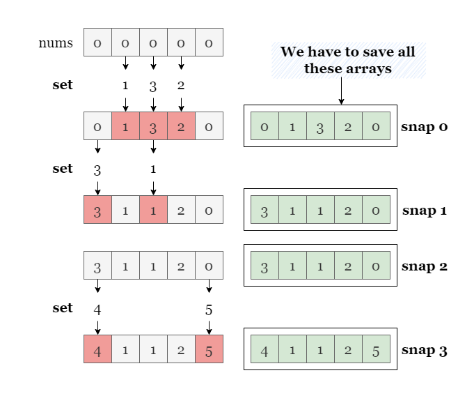
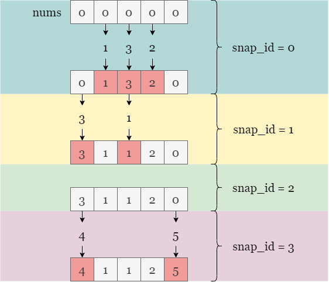
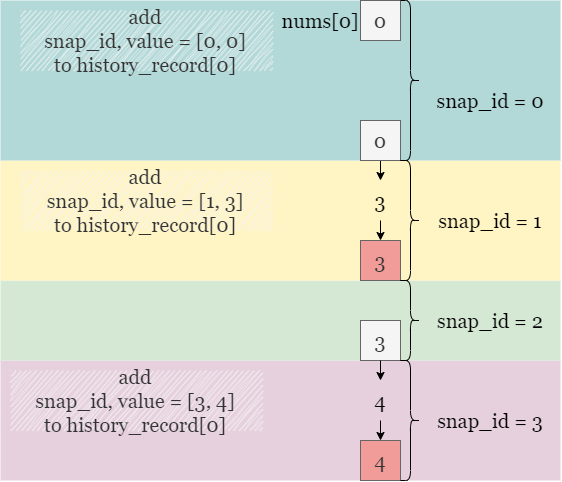
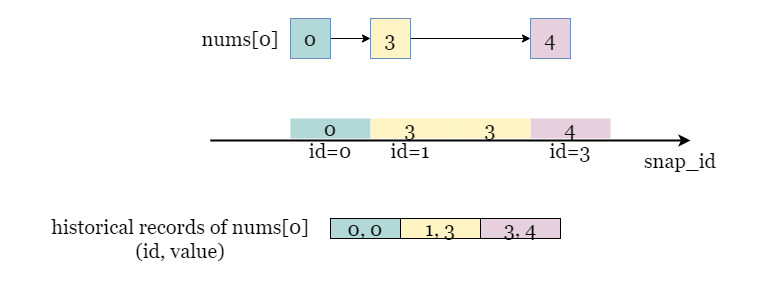
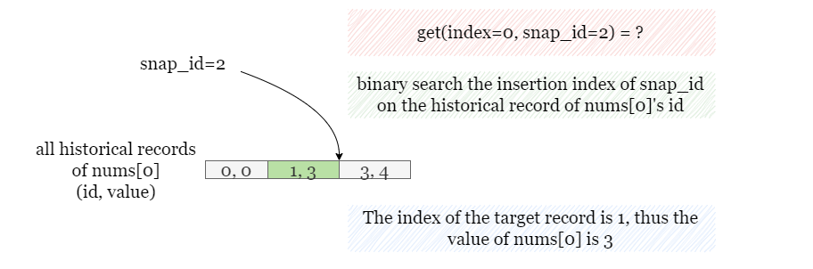

The most straightforward approach to this problem is to keep track of every snapshot taken by saving the values of all the elements in the array at that moment. We can then retrieve the values at any given snapshot by indexing into the snapshot list and fetching the element's value.
As shown in the picture below, we save a copy of the entire array nums every time we take a snapshot as
snap_0, snap_1, and so on. Then get(index=0, snap_id=2) returns the first
element of snap_2.

While this approach is conceptually simple, it would be inefficient for large arrays or if snapshots are taken frequently. Suppose the maximum number of calls to each function is O(n)O(n), it saves O(n)O(n) arrays of size length\text{length}, resulting in high memory usage and time complexity.
One alternative is to focus on the historical record of each element, and record the value of the modified element
when set is called. This approach will reduce the memory required to store the history of the array's
elements and improve query times for specific snapshots since we save an element nums[i] only when it
is modified by set.

To implement this approach, we can create a list of records for each index i. A record contains the
snapshot id and the value of the element in that snapshot, in the format of (snap_id, nums[i]). We can
then store the list of records of each element in a dictionary history_records, where the key is i.
Take a look at how we update the historical record of nums[0] in history_records[0].

We have collected every record of nums[0] in history_records[0].

To retrieve the value of nums[0] with the given snapshot id snap_id = 2, we need to find
the insertion position of snap_id in the list of records for nums[0]. It should be noted
that snap_id may not be present in the record list. Therefore, we can use binary search to find the
record with the highest snapshot ID that is less than or equal to the given snap_id.
Note that
snap_id = 2is not included in the historical record ofnums[0], assetwas not called on this element when the snapshot ID was 2. Therefore, the value ofnums[0]remains the same as it was when the snapshot ID was 1.

Once we have the index of the target ID snap_index, we can retrieve the corresponding value from the
record at the position snap_index, which is history_records[0][snap_index][1].
For each element nums[i] in the array, create an empty list to store its historical values, in
the format of [snap_id, value]. Initialize each list by adding the first record [0,
0].
Implement the set(index, val) method: add the historical record [snap_id, value] to
the record list history_records[index].
Implement the snap method: return snap_id and increment it by 1.
Implement the get(index, snap_id) method to retrieve the value of nums[index] in
the array with snapshot id as snap_id:
snap_index
(so the target index is snap_idnex - 1).
history_records[index][snap_index - 1][1].
Java
class SnapshotArray {
int snapId = 0;
TreeMap[] historyRecords;
public SnapshotArray(int length) {
historyRecords = new TreeMap[length];
for (int i = 0; i < length; i++) {
historyRecords[i] = new TreeMap();
historyRecords[i].put(0, 0);
}
}
public void set(int index, int val) {
historyRecords[index].put(snapId, val);
}
public int snap() {
return snapId++;
}
public int get(int index, int snapId) {
return historyRecords[index].floorEntry(snapId).getValue();
}
}
C++
class SnapshotArray {
public:
int snapId;
vector>> historyRecords;
SnapshotArray(int length) {
snapId = 0;
historyRecords.resize(length);
for (int i = 0; i < length; ++i) {
historyRecords[i].push_back(make_pair(0, 0));
}
}
void set(int index, int val) {
historyRecords[index].push_back(make_pair(snapId, val));
}
int snap() {
return snapId++;
}
int get(int index, int snap_id) {
auto it = upper_bound(historyRecords[index].begin(), historyRecords[index].end(), make_pair(snap_id, INT_MAX));
return prev(it)->second;
}
};
Python3
class SnapshotArray:
def __init__(self, length: int):
self.id = 0
self.history_records = [[[0, 0]] for _ in range(length)]
def set(self, index: int, val: int) -> None:
self.history_records[index].append([self.id, val])
def snap(self) -> int:
self.id += 1
return self.id - 1
def get(self, index: int, snap_id: int) -> int:
snap_index = bisect.bisect_right(self.history_records[index], [snap_id, 10 ** 9])
return self.history_records[index][snap_index - 1][1]
Let nn be the maximum number of calls.
Time complexity: O(nlogn)O(n \log n)
In the worst-case scenario, the number of calls to get, set, and
snap are all O(n)O(n).
For each call to get(index, snap_id), we will perform a binary search over the list of
records of nums[index]. Since a list contains at most O(n)O(n) records, a binary search takes O(logn)O(\log n)
time on average. Thus it requires O(nlogn)O(n \log n)
time.
Each call to snap takes O(1)O(1) time.
Each call to set(index, snap_id) appends a pair to the historical record of nums[index],
which takes O(1)O(1)
time.
Space complexity: O(n)O(n)
(snap_id, val) for each call to set, thus there are at most
nn pairs saved in
history_record.